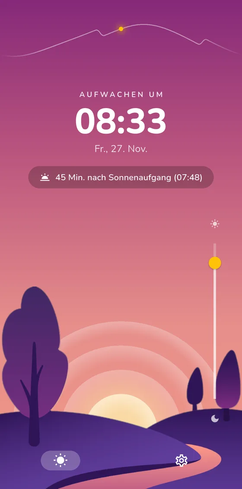

Der Sonnenaufgang verschiebt sich jeden Tag ein wenig. Dein Wecker sollte das auch. Wake at Sunrise berechnet den Sonnenaufgang von morgen für deinen genauen Standort und klingelt genau dann – oder so viele Minuten davor oder danach, wie es dir passt.

So funktioniert es
Die App muss wissen, wo auf der Erde du aufwachst. Nur danach fragt sie – und die Angabe bleibt auf deinem Handy.
Klingeln genau bei Sonnenaufgang oder ein paar Minuten davor oder danach. Lege fest, an welchen Wochentagen der Wecker aktiv ist.
Jede Nacht richtet sich der Wecker still auf den Sonnenaufgang von morgen aus. Während der Morgen durchs Jahr wandert, wandert deine Weckzeit mit.
Funktionen
Eine Aufgabe – dich im Morgengrauen zu wecken – sorgfältig erledigt.
Kein Durchschnitt für die Stadt – die tatsächliche Sonnenaufgangszeit dort, wo dein Handy ist, auf dem Gerät mit astronomischer Mathematik berechnet.
Sag der App, wie viel Schlaf du willst und wie lange du zum Runterkommen brauchst. Sie rechnet vom Sonnenaufgang von morgen zurück und erinnert dich rechtzeitig ans Schlafengehen.
Eine Kurve zeigt, wie sich der Sonnenaufgang übers ganze Jahr verschiebt – mit einem Punkt für heute –, damit du weißt, worauf deine Morgen zusteuern.
Klingelt über dem Sperrbildschirm, übersteht Neustarts und kann die Systemlautstärke ignorieren, damit ein leises Handy keinen verpassten Morgen bedeutet.
Kein Wetterdienst, kein Server. Der Sonnenaufgang wird lokal berechnet, deshalb funktioniert der Wecker auch im Flugmodus und fernab von jedem Netz.
Vollständig übersetzt, mit einstellbarer Schlummerdauer, Lautstärke und Wecktagen.
Datenschutz
Die einzige nennenswerte Berechtigung der App ist der Standort – und er dient genau einem Zweck: den Sonnenaufgang dort zu berechnen, wo du bist.
Früher Zugang
Wake at Sunrise startet bald eine geschlossene Beta auf Android. Tritt der Testgruppe bei, und du bekommst den Installationslink, sobald sie beginnt.
Der Testgruppe beitretenKostenlos, nichts zu kaufen. Nimm das Google-Konto, mit dem du installieren wirst – daran erkennt Google Play, dass es dir die App zeigen soll.
Früher Zugang
Wake at Sunrise ist in der geschlossenen Beta auf Android. Zwei kurze Schritte, und die App gehört dir – dein Feedback prägt den Start.
Google Play muss dein Konto auf der Testerliste haben, bevor es dir die App zeigt. Schon beigetreten? Dann weiter mit Schritt 2.
Der Gruppe beitretenÖffne das auf dem Handy, mit dem du testen wirst, angemeldet mit demselben Google-Konto.
Den Test bei Google Play öffnenDas Testen ist kostenlos, und es gibt nichts zu kaufen. Bitte lass die App ein paar Wochen installiert – Google zählt die durchgehenden Tester, bevor eine neue App veröffentlicht werden darf.
Download
Wake at Sunrise gibt es bei Google Play. Kostenlos, ohne Werbung, ohne Konto.
Jetzt bei Google PlayFrüher Zugang
Wake at Sunrise schließt gerade eine geschlossene Beta auf Android ab. Willst du dabei sein? Schick eine kurze E-Mail, und du bekommst den Link.
Nach dem Beta-Link fragen